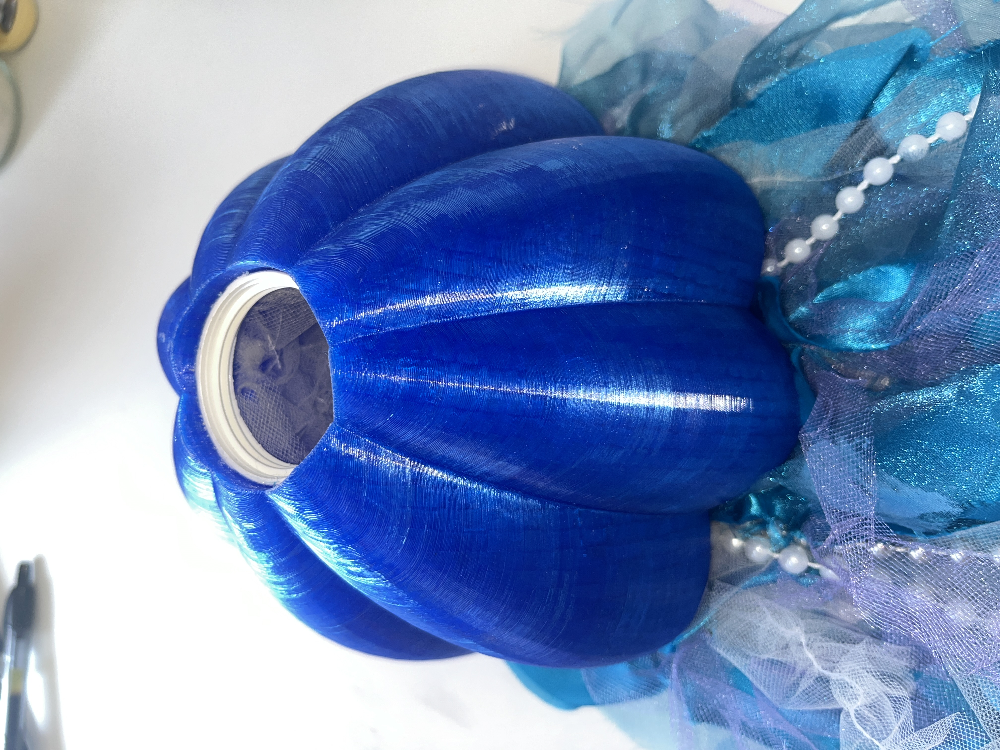
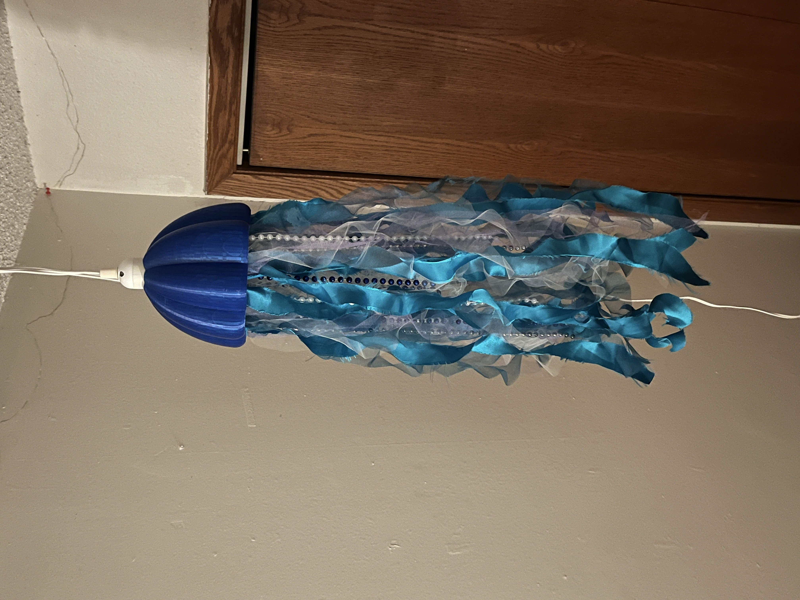
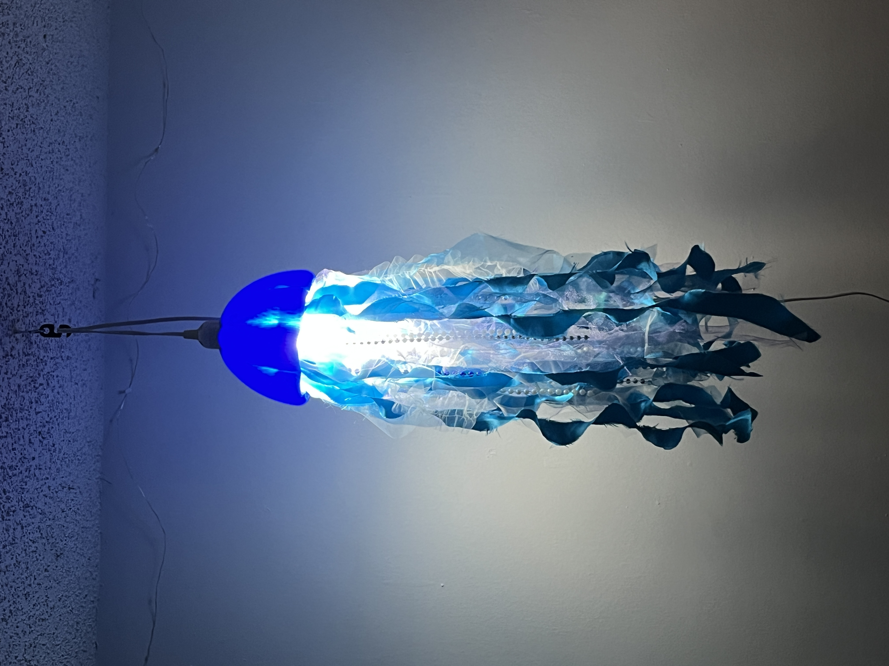
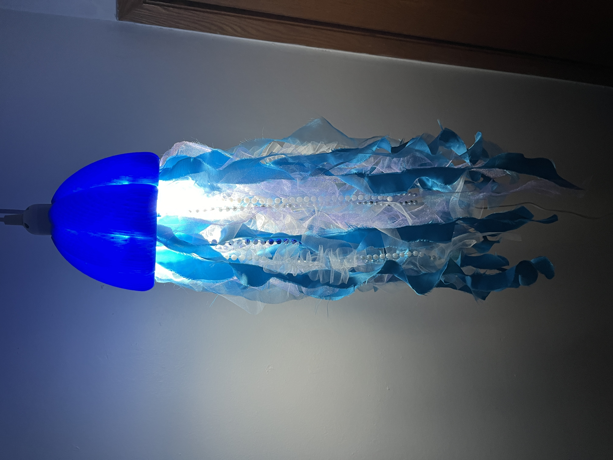

Overview
This fabrication class explored material-driven design through hands-on making. An option for our final was to make lamps. I experimented with form, light diffusion, and structural techniques using a range of materials and fabrication methods. Each lamp began with sketching and material testing, followed by iterative prototyping and physical construction. The projects emphasize learning-through-making, problem-solving, and translating organic inspiration into functional objects.
The Prompt
Create a table lamp at least 8 inches tall using physical fabrication techniques from the class.
Lamp 01 — Mushroom
A 3D-printed lamp modeled after the form and texture of a mushroom cap. The cap was designed in SketchUp by subtracting multiple spheres from a dome, creating a bumpy, organic texture. Internal supports connect the cap to the stem and manage cord placement. Light diffuses through translucent PLA and glows through the gills underneath.
Inspiration & Sketches

Labels & Diagrams


Process
I began by modeling the lamp base and internal supports around the dimensions of the lamp hardware I had ordered. Much of the early process involved struggling with SketchUp constraints, particularly when connecting different-sized circles, subtracting complex forms, and maintaining solid geometry. Repeated scaling issues arose when printed parts no longer fit together after resizing to accommodate print bed limitations. This led to extensive iteration, including multiple reprints of supports and the eventual addition of gills to hide seams, improve fit, and manage cord placement. Measuring internal dimensions became a major challenge until I discovered using Play-Doh as a physical measuring aid, which significantly improved accuracy.

Final Product


Reflection
This was my most technically challenging lamp and involved intense iteration. It taught me the importance of planning for fabrication constraints early, especially print size and tolerances, but also showed me that solutions often emerge through persistence. While the final lamp still has imperfections, I learned that perfection is rarely achievable in first prototypes. If I were to continue developing this piece, I would redesign the connection between the cap and support to be more secure and modular. Overall, the project reinforced the value of starting early, iterating often, and trusting the process even when it feels chaotic.
Lamp 02 — Flower
A lamp made from individually shaped and sewn fabric leaves, each built around a wire armature. The leaves are connected through careful wire wrapping so they open outward like a bloom and hang naturally under gravity. The light source sits at the center; the lace fabric diffuses warmth outward and the form only fully comes together when lit.
Inspiration & Sketches

Labels & Diagrams


Process
I began by shaping individual leaf forms out of wire, then used them as patterns to cut lace fabric. Each leaf was machine-sewn with the wire frame shaped inside, which proved more difficult than expected due to the flexibility of the materials. I left excess wire at the top of each leaf to allow for later attachment. After testing multiple attachment ideas, I constructed a small wire circle to sit above the bulb and connected the leaves through careful wire wrapping. Much of the process involved problem-solving in real time: redoing uneven attachments, seam ripping hours of work, and ultimately using safety pins to plan spacing before committing to sewing. Final adjustments involved ladder stitching and additional hand sewing to refine the form and ensure the leaves overlapped evenly.


Final Product


Reflection
This project reinforced my preference for hands-on iteration and material-driven design. While the process was tedious and often frustrating, sewing allowed for flexibility and aesthetic control that would have been difficult to achieve digitally. I learned the importance of planning attachment strategies before assembly and how small decisions compound over time. The final lamp closely matches my original vision and was deeply satisfying to complete, as it transformed an idea that lived only in my head into a physical object.
Lamp 03 — Jellyfish
This lamp was inspired by a desire to build an additional piece for the ATLAS Institute Expo, outside of the original fabrication class. While planning to present my other lamps, I wanted to expand the collection. I have always been drawn to the ethereal quality of jellyfish and aimed to capture that sense of lightness and movement. I 3D modeled the lamp head and adjusted its scale to allow it to print as a single piece. Internal circular structures were modeled to serve as attachment points for ribbons, tulle, and beads. When illuminated, the light diffuses through the materials in a soft, atmospheric way.
Process

Final Product



Expo Display
All three lamps were exhibited together at the ATLAS Institute end-of-year Expo alongside a peer's collection of lamps. Seeing them displayed as a collection, each one built from a completely different material and technique and made the series feel intentional in a way that individual photos don't quite capture. The exhibit let visitors interact with the lamps in person, experiencing the way light behaves differently through PLA, lace, and tulle.